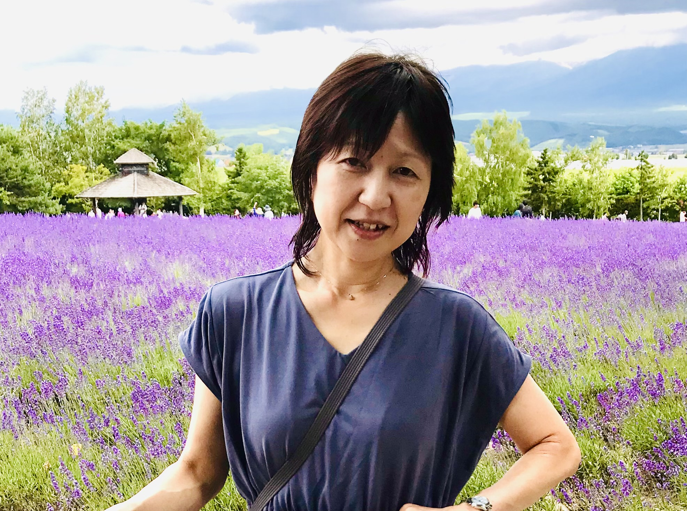

私たちは何のために外国語（日本の学校教育では主に英語）を学ぶのでしょうか。急速にグローバル化が進む現代社会において、多様な他者と協働しながら生きるためには、単に英語の運用能力を高めるだけでは不十分です。外国語教育には、社会言語的スキルや異文化コミュニケーション力（Intercultural Communicative Competence：ICC）の育成が不可欠となっています。
私は、学校における英語科教育の中に国際理解教育や地球市民教育（Global Citizenship Education：GCE）の要素を組み込み、児童生徒が多様な人々の背景（言語・文化・宗教・価値観など）を尊重し、相手意識をもってコミュニケーションを図ろうとする姿勢を育成する授業の開発と評価、その教育的意義や成果について実践的視座から研究しています。
言語活動や学習手立てを工夫することで、児童生徒には世界とのつながりへの気づき（Global Awareness）が生まれ、これが視野の拡大や学習への動機づけにつながることが確認されています。こうしたグローバルな視点（Global Perspective）の導入は、学校（小・中・高）の英語授業のみならず、地域・コミュニティでの学びにも応用可能であり、持続可能な社会を担う地球市民の育成に寄与するものと考えています。
学校教育への展開（英語科授業への国際理解・地球市民教育の組み込み）
教員養成・研修への活用（異文化コミュニケーション力育成の授業づくり支援）
地域・コミュニティへの展開（外国人住民との協働に向けた異文化理解プログラム）
海外連携・協働への可能性（グローバル教育の国際的ネットワーク構築）
多文化共生が求められる現代社会において、本研究で開発した授業（教育）モデルは、コミュニティにおける外国人住民との協働にも必要な異文化理解力の育成に寄与するものです。英語学習の中にも多言語・多文化の視点を入れ、多様な他者との協働に不可欠なコミュニケーション力や異文化理解を高めることで、産業界の人材育成にも有益です。また、国際理解・国際交流事業や多文化共生政策と接続し、自治体の国際化施策を具体的に支える教育的手立てとなり得ると考えています。

英語科教育・国際理解教育・多文化共生に関する授業開発・教員研修・自治体施策へのご相談を承っています。